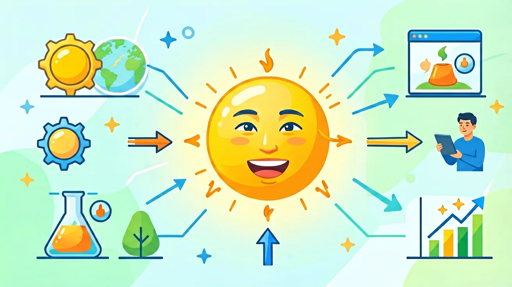

真实情境
冬季取暖器的选择困境
小华家准备更换冬季取暖设备，销售员同时推荐了电暖器和燃气壁挂炉。电暖器标注功率2000W，燃气产品则标注热值35MJ/m³。家人纠结于能耗对比和长期使用成本，需要计算不同能源的实际放热量。
已有经验
学生已掌握能量单位换算（J与kJ）、简单热值计算、家用电器功率概念
真正卡点
混淆反应热（ΔH）正负号含义，忽视热化学方程式中物质状态对能量计算的影响
本课任务
计算比较两种设备的理论放热量，分析热化学方程式中的能量变化
自发过程由熵（S，体系混乱度）和焓共同决定。吉布斯自由能ΔG=ΔH-TΔS，当ΔG<0时反应自发。例如：①冰融化ΔH>0但ΔS>0，高温时ΔG<0（自发）；②氨合成ΔH<0且ΔS<0，低温才自发。生活中，樟脑丸升华（ΔH>0，ΔS>0）在室温即可发生，而水结冰（ΔH<0，ΔS<0）需低温驱动。工业生产需综合考量：哈伯法合成氨在400-500℃进行，既保证反应速率又兼顾转化率（低温有利平衡但速率过慢）。理解这些原理可优化反应条件，如控制碳酸钙分解温度（ΔH>0，ΔS>0）来制备生石灰。
1. 为什么触摸浓硫酸稀释后的容器会发热？2. 相同质量的氢气和汽油完全燃烧，哪个放热更多？为什么？
1. 计算2mol乙炔（C₂H₂）完全燃烧的ΔH（已知ΔHf°(C₂H₂)=+227kJ/mol，其他数据自查）。2. 解释为何常温下H₂与O₂混合不自发反应，但点燃后剧烈反应？
误区1：认为放热反应一定自发——忽略熵变影响（如2NO→N₂O₄放热但高温逆向自发）。错因2：混淆键能与电离能——键能是分子内作用，电离能是原子失去电子所需能量。诊断方法：通过石墨→金刚石案例（ΔH>0但ΔS≈0）说明仅用焓判断自发的局限性。
迁移任务：设计一套家庭用化学暖手宝方案，要求：①列出主要成分并写热化学方程式；②计算50g铁粉氧化放热量（ΔHf°(Fe₂O₃)=-824kJ/mol）；③分析加入食盐、活性炭的作用（提示：从反应速率角度探究）。
先独立作答，再点选项查看对错与错因。
已知甲烷燃烧热为-890kJ/mol，该数值的物理意义是
对比相同质量的氢气和汽油（C8H18）完全燃烧，正确结论是（已知：ΔH(H2)=-286kJ/mol，ΔH(C8H18)=-5471kJ/mol）
下列热化学方程式书写正确的是
1kg标准煤完全燃烧释放29.3MJ能量，相当于____度电（1度=3.6×10^6J）
答案：8.14
29.3×10^6J ÷ 3.6×10^6J/度
已知：C2H5OH(l)+3O2(g)→2CO2(g)+3H2O(l) ΔH=-1367kJ/mol，若完全燃烧23g乙醇，放热____kJ
答案：683.5
23g为0.5mol，1367×0.5
关于反应热ΔH的理解正确的是
设计实验对比醋酸钠结晶放热与铁粉氧化放热两种暖手方案的产热特性
❓ 为什么冬天暖手宝一捏就发热？
❓ 放热反应和吸热反应到底谁更厉害？
❓ 焓变△H算出来负数为啥反而是放热？
学完这一课，这些问题你都能自信地回答。
✅ △H=H生成物-H反应物，负值才是放热
💡 混淆数学正负与实际能量流向
✅ 写热化学方程式必须标注聚集状态
💡 未理解H2O(g)和H2O(l)的内能差异
口诀：断键吸能像借钱，成键放能似还贷，焓变正负定冷暖
类比：像网购余额变化：付款（放热）金额显示为负，充值（吸热）显示为正
And：学生知道燃烧会放热
But：不理解能量变化的微观原因
Therefore：建立化学键与能量转化的直接关联
化学反应吸放热的本质是旧键断裂吸能 vs 新键形成放能的较量。比如氢气燃烧：断裂1mol H-H键（436kJ）和0.5mol O=O键（498kJ）共需吸能685kJ，形成1mol H-O键（463kJ×2）放能926kJ，最终净放热241kJ。就像做生意，成本685万收入926万，净赚241万。
🌍 暖宝宝发热就是利用铁粉氧化（4Fe+3O₂→2Fe₂O₃）时新键形成放能＞旧键断裂吸能，实测每包放热约200kJ，够暖手4小时。
冰融化时吸热10kJ，这属于？
And：已掌握键能概念
But：不会定量比较反应能量
Therefore：学会用键能差计算实际焓变
ΔH=反应物总键能-生成物总键能。计算甲烷燃烧CH₄+2O₂→CO₂+2H₂O：断裂4mol C-H键（413×4=1652kJ）和2mol O=O键（498×2=996kJ），总吸能2648kJ；形成2mol C=O键（799×2=1598kJ）和4mol O-H键（463×4=1852kJ），总放能3450kJ，最终ΔH=2648-3450=-802kJ/mol，负值说明放热。
🌍 天然气灶火苗呈蓝色时，每立方米甲烷（约44.6mol）完全燃烧可放热802×44.6≈35,800kJ，相当于烧开40L水。
已知N≡N键能945kJ/mol，H-H键436kJ/mol，N-H键391kJ/mol，合成氨N₂+3H₂→2NH₃的ΔH为？
